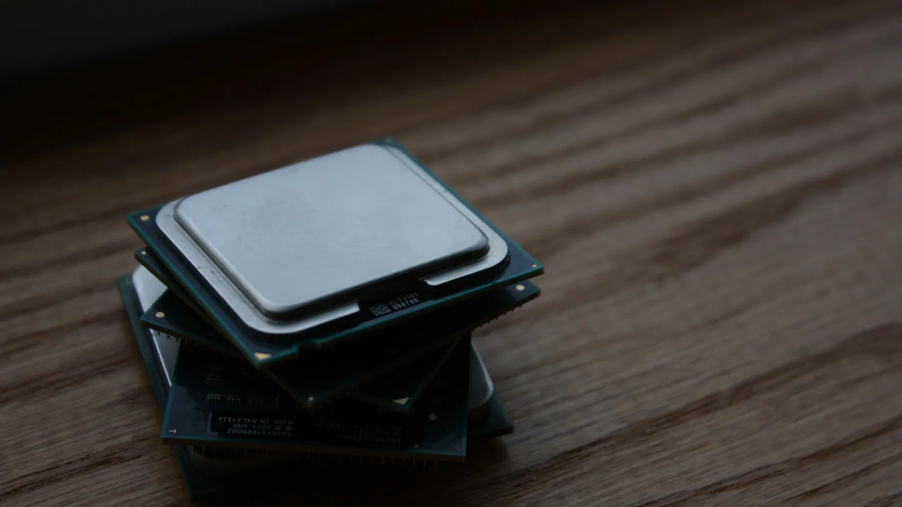
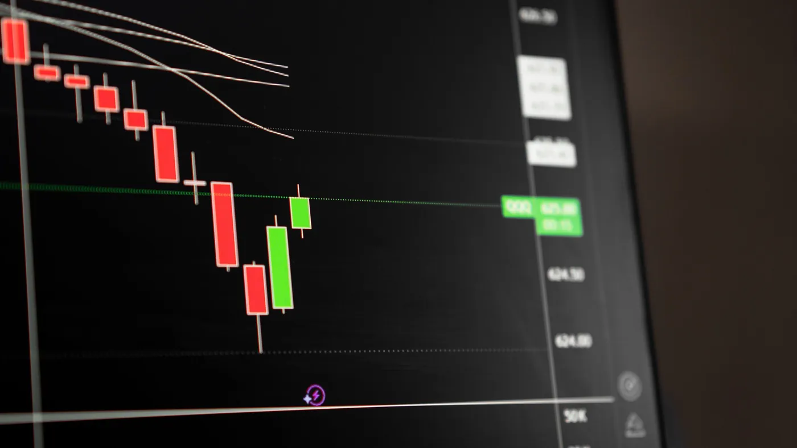
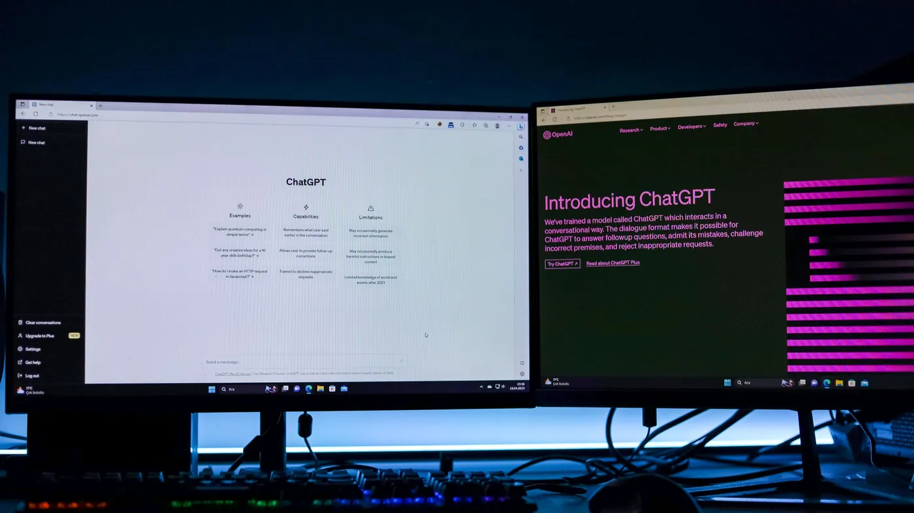

Frontier capability keeps getting cheaper at the same sticker price. The businesses that gain from that are the ones who can change the model behind an agent without touching anything else.

Anthropic shipped Claude Opus 5 at the same price as the model it replaces. It posts state-of-the-art numbers on coding and knowledge tests, gets close to the strongest model on the market for roughly half the cost, and is meaningfully better at long multi-step work: checking its own output, catching its own mistakes, finishing jobs that used to stall halfway.
The detail that matters if you run operations sits further down the benchmark list. It leads on business automation tasks. Not chat quality. Automation.
This is not a turning point, and treating it as one would be silly. It is the fourth or fifth time in two years that the price of a given level of capability has roughly halved. The regularity is the story, not the release.
Two things change when capability gets cheaper at a fixed sticker price, and both happen whether or not anyone on your team is paying attention.
The first is that your list of tasks marked "not worth automating" is out of date. Everything you assessed and rejected last year, you rejected against a particular cost and a particular error rate. Both moved. Some of that work would clear the bar today, and nobody is going to raise it, because the decision is already filed as settled.

The second is less comfortable. Whatever model you standardised on will not be the right default in twelve months. That is no criticism of the choice; it is the shape of the market right now. The risk was never picking the wrong model. The risk is building so that changing it becomes a project.
That difference has a price attached. When the model is welded into an application, switching means a rewrite, a test cycle, a release, and a fight over priorities. So it does not happen. You keep paying more for less, quarter after quarter, because the migration is never quite worth scheduling.
In CX-Builder the model is a node in a flow, not the ground the flow is built on. The agent's instructions, the documents it retrieves from, the approval gate, the connectors into your helpdesk and your CRM: none of it knows which model produced the answer. Change the node, keep the rest.
That turns a migration into an afternoon. More useful, it makes a real comparison possible. You can stand a new model next to your current one over the same conversations and look at what actually comes out, rather than trusting a benchmark run on somebody else's work.
Because it runs on your own infrastructure, the choice stays yours, including the option to put a small cheap model on the routine majority of tickets and reserve the expensive one for the cases that need judgment. The number to manage is cost per resolved ticket, not cost per token.

Keep model selection at the edge of the flow. The agentflow holds the instructions and the tools. A vector store holds your policies and product documentation, so answers stay grounded in your material no matter which model reads it. A human-in-the-loop node holds anything above your risk line. The model is one configured node those pieces call, and swapping it changes nothing else.
To judge a swap, replay a sample of last month's real conversations through both versions and compare the results against how a person actually resolved each case. Watch cost per resolution and how often things escalate to a human. Those move budgets. Accuracy on a public test set does not.
Book a recurring hour each quarter to re-test three things: the model behind your busiest agent, and two tasks you ruled out last year as too expensive or too unreliable to automate. The technology repriced itself while you were looking elsewhere. The list you built against the old prices is what costs you now.